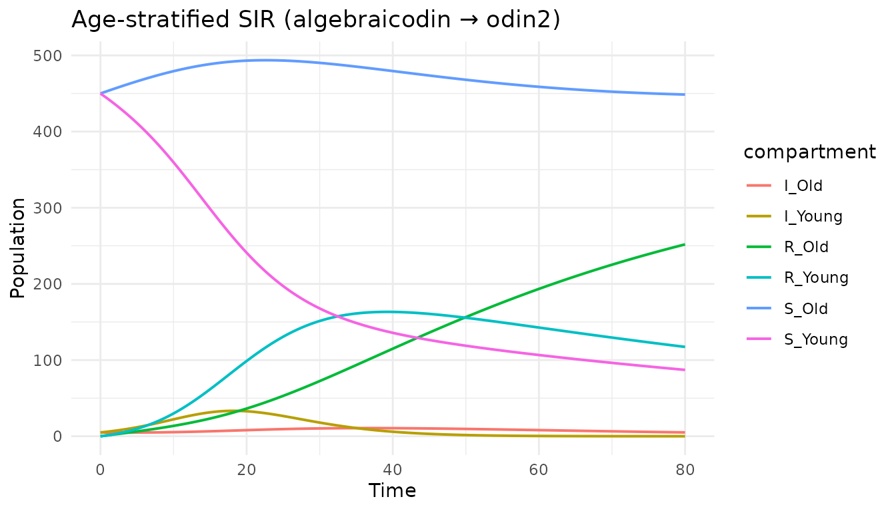

Stratification with typed products
Simon Frost
2026-03-31
Source:vignettes/stratification.Rmd
stratification.RmdIntroduction
Many epidemiological models stratify a base compartmental model by attributes like age, risk group, or vaccination status. Doing this by hand is error-prone: an SIR model stratified by 3 age groups has 9 species and many transitions to track.
algebraicodin automates stratification using typed Petri nets and their typed product, porting the approach from AlgebraicPetri.jl. This is the categorical product in the slice category , where is a type system (ontology) that specifies the allowed transition types.
library(algebraicodin)
#>
#> Attaching package: 'algebraicodin'
#> The following objects are masked from 'package:base':
#>
#> %o%, %x%Type systems (ontologies)
A type system is a Petri net that defines abstract
transition patterns. The infectious_ontology() provides the
standard type system for infectious disease models:
ont <- infectious_ontology()
species_names(ont)
#> [1] "Pop"
transition_names(ont)
#> [1] "infect" "disease" "strata"The ontology has one species type (Pop) and three transition types:
| Type | Input → Output | Meaning |
|---|---|---|
| infect | Pop, Pop → Pop, Pop | Frequency-dependent transmission |
| disease | Pop → Pop | Spontaneous transition (recovery, death, …) |
| strata | Pop → Pop | Movement between strata (aging, migration, …) |
Typed Petri nets
A typed Petri net is a morphism from a concrete Petri net to the type system. Each species and transition in is assigned a type in .
sir <- labelled_petri_net(
c("S", "I", "R"),
inf = c("S", "I") %=>% c("I", "I"),
rec = "I" %=>% "R"
)
sir_typed <- typed_petri(sir, ont,
species_types = c(S = "Pop", I = "Pop", R = "Pop"),
transition_types = c(inf = "infect", rec = "disease")
)
sir_typed@species_map
#> [1] 1 1 1
sir_typed@transition_map
#> [1] 1 2
plot_petri(sir_typed)All SIR species map to Pop (index 1). The
inf transition maps to infect (index 1) and
rec maps to disease (index 2).
Reflexive transitions
Before taking a typed product, each model must be augmented with reflexive transitions—identity self-loops that allow the product to pair “real” transitions in one model with “do-nothing” transitions in the other.
For stratification by age, the SIR model needs reflexive
strata transitions (so that aging can be paired with each
compartment):
sir_aug <- add_reflexives(sir_typed, list(
S = "strata",
I = "strata",
R = "strata"
))
transition_names(sir_aug@pn)
#> [1] "inf" "rec" "refl_S_strata" "refl_I_strata"
#> [5] "refl_R_strata"The augmented model now has 5 transitions:
plot_petri(sir_aug)Defining strata
Age groups are modelled as a simple Petri net with
strata-typed transitions. For two age groups with
aging:
age <- labelled_petri_net(
c("Young", "Old"),
aging = "Young" %=>% "Old"
)
age_typed <- typed_petri(age, ont,
species_types = c(Young = "Pop", Old = "Pop"),
transition_types = c(aging = "strata")
)The age model also needs reflexive transitions for
infect and disease so these processes can
occur within each age group:
age_aug <- add_reflexives(age_typed, list(
Young = c("infect", "disease"),
Old = c("infect", "disease")
))
transition_names(age_aug@pn)
#> [1] "aging" "refl_Young_infect" "refl_Young_disease"
#> [4] "refl_Old_infect" "refl_Old_disease"
plot_petri(age_aug)Taking the typed product
The typed product (or stratification) creates all
valid pairs of species and transitions. The %x% operator is
shorthand for typed_product():
sir_age <- sir_aug %x% age_aug
species_names(sir_age)
#> [1] "S_Young" "S_Old" "I_Young" "I_Old" "R_Young" "R_Old"
transition_names(sir_age)
#> [1] "inf_Young" "inf_Old" "rec_Young" "rec_Old" "aging_S" "aging_I"
#> [7] "aging_R"The stratified model has 6 species (S, I, R for each age group) and 7 transitions (within-group infection, cross-group infection, and recovery for each group, plus age transitions).
plot_petri(sir_age)The result has:
- 6 species: S×{Young,Old}, I×{Young,Old}, R×{Young,Old}
- 7 transitions: infection and recovery within each age group, plus aging across each compartment
Generated odin2 code
code <- pn_to_odin(sir_age, "ode")
cat(code)
#> ## Auto-generated by algebraicodin
#>
#> ## Parameters
#> inf_Young <- parameter()
#> inf_Old <- parameter()
#> rec_Young <- parameter()
#> rec_Old <- parameter()
#> aging_S <- parameter()
#> aging_I <- parameter()
#> aging_R <- parameter()
#>
#> ## Initial conditions
#> S_Young0 <- parameter()
#> S_Old0 <- parameter()
#> I_Young0 <- parameter()
#> I_Old0 <- parameter()
#> R_Young0 <- parameter()
#> R_Old0 <- parameter()
#>
#> initial(S_Young) <- S_Young0
#> initial(S_Old) <- S_Old0
#> initial(I_Young) <- I_Young0
#> initial(I_Old) <- I_Old0
#> initial(R_Young) <- R_Young0
#> initial(R_Old) <- R_Old0
#>
#> ## Transition rates
#> rate_inf_Young <- inf_Young * S_Young * I_Young
#> rate_inf_Old <- inf_Old * S_Old * I_Old
#> rate_rec_Young <- rec_Young * I_Young
#> rate_rec_Old <- rec_Old * I_Old
#> rate_aging_S <- aging_S * S_Young
#> rate_aging_I <- aging_I * I_Young
#> rate_aging_R <- aging_R * R_Young
#>
#> ## Derivatives
#> deriv(S_Young) <- -rate_inf_Young - rate_aging_S
#> deriv(S_Old) <- -rate_inf_Old + rate_aging_S
#> deriv(I_Young) <- rate_inf_Young - rate_rec_Young - rate_aging_I
#> deriv(I_Old) <- rate_inf_Old - rate_rec_Old + rate_aging_I
#> deriv(R_Young) <- rate_rec_Young - rate_aging_R
#> deriv(R_Old) <- rate_rec_Old + rate_aging_REach transition rate uses mass-action kinetics within the appropriate stratum. The aging transitions move individuals between age groups while preserving their disease state.
Comparison with hand-written code
Here is the equivalent hand-written odin2 model:
handwritten <- "
inf_Young <- parameter()
inf_Old <- parameter()
rec_Young <- parameter()
rec_Old <- parameter()
aging_S <- parameter()
aging_I <- parameter()
aging_R <- parameter()
S_Young0 <- parameter()
S_Old0 <- parameter()
I_Young0 <- parameter()
I_Old0 <- parameter()
R_Young0 <- parameter()
R_Old0 <- parameter()
initial(S_Young) <- S_Young0
initial(S_Old) <- S_Old0
initial(I_Young) <- I_Young0
initial(I_Old) <- I_Old0
initial(R_Young) <- R_Young0
initial(R_Old) <- R_Old0
rate_inf_Young <- inf_Young * S_Young * I_Young
rate_inf_Old <- inf_Old * S_Old * I_Old
rate_rec_Young <- rec_Young * I_Young
rate_rec_Old <- rec_Old * I_Old
rate_aging_S <- aging_S * S_Young
rate_aging_I <- aging_I * I_Young
rate_aging_R <- aging_R * R_Young
deriv(S_Young) <- -rate_inf_Young - rate_aging_S
deriv(S_Old) <- -rate_inf_Old + rate_aging_S
deriv(I_Young) <- rate_inf_Young - rate_rec_Young - rate_aging_I
deriv(I_Old) <- rate_inf_Old - rate_rec_Old + rate_aging_I
deriv(R_Young) <- rate_rec_Young - rate_aging_R
deriv(R_Old) <- rate_rec_Old + rate_aging_R
"Running both:
pars <- list(
inf_Young = 0.001, inf_Old = 0.0005,
rec_Young = 0.25, rec_Old = 0.25,
aging_S = 0.01, aging_I = 0.01, aging_R = 0.01,
S_Young0 = 450, S_Old0 = 450,
I_Young0 = 5, I_Old0 = 5,
R_Young0 = 0, R_Old0 = 0
)
t <- seq(0, 80, by = 0.5)
gen_alg <- odin2::odin(code)
#> ✔ Wrote 'DESCRIPTION'
#> ✔ Wrote 'NAMESPACE'
#> ✔ Wrote 'R/dust.R'
#> ✔ Wrote 'src/dust.cpp'
#> ✔ Wrote 'src/Makevars'
#> ℹ 13 functions decorated with [[cpp11::register]]
#> ✔ generated file cpp11.R
#> ✔ generated file cpp11.cpp
#> ℹ Re-compiling odin.system7ebba6e1
#> ── R CMD INSTALL ───────────────────────────────────────────────────────────────
#> * installing *source* package ‘odin.system7ebba6e1’ ...
#> ** this is package ‘odin.system7ebba6e1’ version ‘0.0.1’
#> ** using staged installation
#> ** libs
#> using C++ compiler: ‘g++ (Ubuntu 13.3.0-6ubuntu2~24.04.1) 13.3.0’
#> g++ -std=gnu++17 -I"/opt/R/4.5.3/lib/R/include" -DNDEBUG -I'/home/runner/work/_temp/Library/cpp11/include' -I'/home/runner/work/_temp/Library/dust2/include' -I'/home/runner/work/_temp/Library/monty/include' -I/usr/local/include -DHAVE_INLINE -fopenmp -fpic -g -O2 -Wall -pedantic -fdiagnostics-color=always -c cpp11.cpp -o cpp11.o
#> g++ -std=gnu++17 -I"/opt/R/4.5.3/lib/R/include" -DNDEBUG -I'/home/runner/work/_temp/Library/cpp11/include' -I'/home/runner/work/_temp/Library/dust2/include' -I'/home/runner/work/_temp/Library/monty/include' -I/usr/local/include -DHAVE_INLINE -fopenmp -fpic -g -O2 -Wall -pedantic -fdiagnostics-color=always -c dust.cpp -o dust.o
#> g++ -std=gnu++17 -shared -L/opt/R/4.5.3/lib/R/lib -L/usr/local/lib -o odin.system7ebba6e1.so cpp11.o dust.o -fopenmp -L/opt/R/4.5.3/lib/R/lib -lR
#> installing to /tmp/Rtmpz8TDAt/devtools_install_3633546fafa7/00LOCK-dust_36332366e1d4/00new/odin.system7ebba6e1/libs
#> ** checking absolute paths in shared objects and dynamic libraries
#> * DONE (odin.system7ebba6e1)
#> ℹ Loading odin.system7ebba6e1
sys_alg <- dust2::dust_system_create(gen_alg, pars, n_particles = 1)
dust2::dust_system_set_state_initial(sys_alg)
y_alg <- dust2::dust_system_simulate(sys_alg, t)
gen_hw <- odin2::odin(handwritten)
#> ℹ Using cached generator
sys_hw <- dust2::dust_system_create(gen_hw, pars, n_particles = 1)
dust2::dust_system_set_state_initial(sys_hw)
y_hw <- dust2::dust_system_simulate(sys_hw, t)
cat("Max absolute difference:", max(abs(y_alg - y_hw)), "\n")
#> Max absolute difference: 0
# Plot
snames <- species_names(sir_age)
df <- data.frame(
time = rep(t, length(snames)),
value = as.vector(t(y_alg)),
compartment = rep(snames, each = length(t))
)
library(ggplot2)
ggplot(df, aes(time, value, colour = compartment)) +
geom_line(linewidth = 0.7) +
labs(title = "Age-stratified SIR (algebraicodin → odin2)",
x = "Time", y = "Population") +
theme_minimal()
Three age groups
Scaling to more strata is trivial. Here is SIR × 3 age groups with pairwise aging:
age3 <- labelled_petri_net(
c("Young", "Middle", "Old"),
aging_YM = "Young" %=>% "Middle",
aging_MO = "Middle" %=>% "Old"
)
age3_typed <- typed_petri(age3, ont,
species_types = c(Young = "Pop", Middle = "Pop", Old = "Pop"),
transition_types = c(aging_YM = "strata", aging_MO = "strata")
)
age3_aug <- add_reflexives(age3_typed, list(
Young = c("infect", "disease"),
Middle = c("infect", "disease"),
Old = c("infect", "disease")
))
sir_age3 <- sir_aug %x% age3_aug
cat("Species:", species_names(sir_age3), "\n")
#> Species: S_Young S_Middle S_Old I_Young I_Middle I_Old R_Young R_Middle R_Old
cat("Transitions:", transition_names(sir_age3), "\n")
#> Transitions: inf_Young inf_Middle inf_Old rec_Young rec_Middle rec_Old aging_YM_S aging_MO_S aging_YM_I aging_MO_I aging_YM_R aging_MO_R
cat("nparts: S =", acsets::nparts(sir_age3@pn, "S"),
", T =", acsets::nparts(sir_age3@pn, "T"), "\n")
#> nparts: S = 9 , T = 129 species and 12 transitions—automatically generated with correct stoichiometry.
Risk group stratification
Risk groups follow the same pattern. Here we stratify SIR by two risk levels without movement between groups (no strata transitions):
risk <- labelled_petri_net(c("High", "Low"))
risk_typed <- typed_petri(risk, ont,
species_types = c(High = "Pop", Low = "Pop"),
transition_types = setNames(character(0), character(0))
)
risk_aug <- add_reflexives(risk_typed, list(
High = c("infect", "disease"),
Low = c("infect", "disease")
))
sir_risk <- sir_aug %x% risk_aug
species_names(sir_risk)
#> [1] "S_High" "S_Low" "I_High" "I_Low" "R_High" "R_Low"
transition_names(sir_risk)
#> [1] "inf_High" "inf_Low" "rec_High" "rec_Low"Without strata transitions, there is no movement between risk groups. The infection and recovery happen independently within each group.
The stratify() wrapper
stratify() is an alias for
typed_product():
sir_age2 <- stratify(sir_aug, age_aug)
identical(species_names(sir_age2), species_names(sir_age))
#> [1] TRUEStochastic stratified models
The stratified Petri net can generate any model type. Here is the age-stratified SIR as a stochastic model:
cat(pn_to_odin(sir_age, "stochastic"))
#> ## Auto-generated by algebraicodin
#>
#> ## Parameters
#> inf_Young <- parameter()
#> inf_Old <- parameter()
#> rec_Young <- parameter()
#> rec_Old <- parameter()
#> aging_S <- parameter()
#> aging_I <- parameter()
#> aging_R <- parameter()
#>
#> ## Initial conditions
#> S_Young0 <- parameter()
#> S_Old0 <- parameter()
#> I_Young0 <- parameter()
#> I_Old0 <- parameter()
#> R_Young0 <- parameter()
#> R_Old0 <- parameter()
#>
#> initial(S_Young) <- S_Young0
#> initial(S_Old) <- S_Old0
#> initial(I_Young) <- I_Young0
#> initial(I_Old) <- I_Old0
#> initial(R_Young) <- R_Young0
#> initial(R_Old) <- R_Old0
#>
#> ## Transition probabilities and draws
#> p_inf_Young <- 1 - exp(-(inf_Young * I_Young) * dt)
#> n_inf_Young <- Binomial(S_Young, p_inf_Young)
#> p_inf_Old <- 1 - exp(-(inf_Old * I_Old) * dt)
#> n_inf_Old <- Binomial(S_Old, p_inf_Old)
#> p_rec_Young <- 1 - exp(-(rec_Young) * dt)
#> n_rec_Young <- Binomial(I_Young, p_rec_Young)
#> p_rec_Old <- 1 - exp(-(rec_Old) * dt)
#> n_rec_Old <- Binomial(I_Old, p_rec_Old)
#> p_aging_S <- 1 - exp(-(aging_S) * dt)
#> n_aging_S <- Binomial(S_Young, p_aging_S)
#> p_aging_I <- 1 - exp(-(aging_I) * dt)
#> n_aging_I <- Binomial(I_Young, p_aging_I)
#> p_aging_R <- 1 - exp(-(aging_R) * dt)
#> n_aging_R <- Binomial(R_Young, p_aging_R)
#>
#> ## Update equations
#> update(S_Young) <- S_Young - n_inf_Young - n_aging_S
#> update(S_Old) <- S_Old - n_inf_Old + n_aging_S
#> update(I_Young) <- I_Young + n_inf_Young - n_rec_Young - n_aging_I
#> update(I_Old) <- I_Old + n_inf_Old - n_rec_Old + n_aging_I
#> update(R_Young) <- R_Young + n_rec_Young - n_aging_R
#> update(R_Old) <- R_Old + n_rec_Old + n_aging_RSummary
| Step | Function | Purpose |
|---|---|---|
| Define type system | infectious_ontology() |
Declare allowed transition types |
| Assign types | typed_petri() |
Create morphism PN → ontology |
| Add reflexives | add_reflexives() |
Enable cross-model pairing |
| Stratify |
%x% or typed_product()
|
Compute categorical product |
| Flatten | flatten() |
Extract underlying PN from typed PN |
| Generate code | pn_to_odin() |
Produce odin2 DSL for any model type |
The typed product guarantees structural correctness: every species pair has consistent transitions, and the stoichiometry is preserved. Scaling from 2 to 20 strata requires only changing the strata model—the base disease model is unchanged.